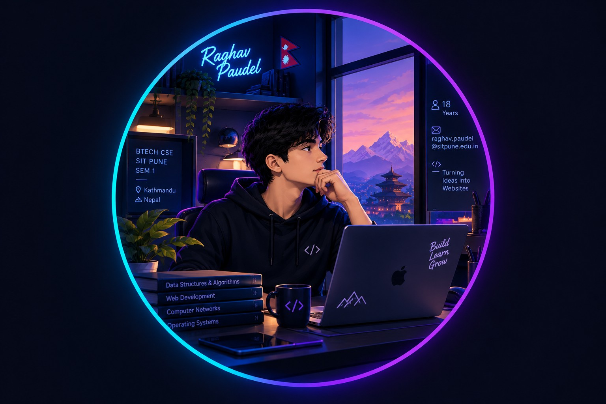

Years old
Curious by default
OPEN TO LEARN • BUILD • EXPLORE
Hello, I'm
Raghav Paudel.
I build my future,
one idea at a time.
18-year-old B.Tech Computer Science & Engineering student at Symbiosis Institute of Technology, Pune, originally from Kathmandu, Nepal. I’m currently in Semester 1, turning curiosity into code and ideas into useful digital experiences.
HTML
CSS
GENERATIVE AI
SEM 1

CS + Creativity
Learning in public
Kathmandu → Pune
New chapter, same curiosity
Semester
B.Tech CSE journey
Project ideas
Always iterating
Things to learn
That’s the fun part
01 / ABOUT
A little context about me.
THE STORY
From Kathmandu to Pune, into Computer Science.
I’m Raghav Paudel, a student from Kathmandu, Nepal, now pursuing a B.Tech in Computer Science & Engineering at Symbiosis Institute of Technology, Pune. Semester 1 is about building strong foundations, experimenting with technology, and discovering what kind of builder I want to become.
This website is part of my practical work on creating a simple personal website with HTML/CSS and Generative AI tools. I’m using it as more than a submission: it is a small digital space for documenting my learning, projects, goals, and progress.
“
Start simple. Make it useful. Keep improving.
PROFILE
Name
Raghav Paudel
From
Kathmandu, Nepal
Studying
B.Tech CSE
Institute
Symbiosis Institute of Technology, Pune
Semester
1st Semester
RIGHT NOW
Learning the fundamentals
Programming • Web • Problem solving • AI-assisted creation
02 / JOURNEY
Where I am right now.
01
2026 — PRESENT
B.Tech Computer Science & Engineering
Building a foundation in CSE at Symbiosis Institute of Technology, Pune. Exploring programming, web development, computational thinking, and the practical role of Generative AI.
Semester 1
CSE
SIT Pune
02
PRACTICAL NO. 05
Personal Website with HTML/CSS
Created a responsive personal portfolio using a separate HTML structure and CSS stylesheet, customized with personal information and projects. Generative AI is used as a development assistant for structure, styling, and iteration.
HTML
CSS
Generative AI
03
NEXT CHAPTER
More projects, deeper fundamentals.
The goal is to turn small experiments into increasingly useful, thoughtful projects while learning how software is designed, built, tested, and shared.
Build
Experiment
Improve
03 / PROJECTS
Small builds. Big curiosity.
A growing collection of class work, experiments, and project concepts.
01
CURRENT
PRACTICAL • WEB DEVELOPMENT
Personal Portfolio Website
A responsive personal website designed to present my profile, academic journey, projects, skills, and contact information in one focused digital experience.
HTML5
CSS3
Responsive UI
GenAI
02
CONCEPT
CONCEPT • PRODUCTIVITY
Semester 1 Learning Dashboard
A concept for organizing subjects, coding practice, assignment deadlines, progress notes, and weekly goals in a single student-friendly dashboard.
UX Thinking
Planning
Student Tools
03
EXPLORING
LEARNING • PROGRAMMING
CSE Foundations Lab
A growing learning space for first-semester programming exercises, problem-solving patterns, web experiments, and notes that become more refined with every iteration.
C Programming
Problem Solving
Web Basics
04 / SKILLS
What I’m building up.
CURRENT TOOLKIT
These are learning-progress indicators, not formal certifications or professional proficiency scores.
RP
HTML
CSS
CSE
AI
BUILD
05 / ACADEMIC SNAPSHOT
The details behind this assignment.
06 / ASSIGNMENT FOCUS
Learning through building.
The practical combines web fundamentals with Generative AI-assisted development.
OBJECTIVE
Understand how a personal website is created with HTML/CSS and AI assistance.
This practical explores how a personal website can showcase skills, projects, and achievements while using Generative AI to accelerate structure, layout, styling, and iteration.
KEY CONCEPTS
01HTMLStructure & content
02CSSStyling & visual appearance
03Generative AICode, palettes & layouts
PRACTICAL WORKFLOW
01Generate a base portfolio
02Customize identity + photo
03Add at least two projects
04Personalize CSS
05Host on GitHub Pages / Netlify
06Add published link + screenshots
07 / CONTACT
Have an idea?
Have an idea?
Let’s start a conversation.
For academic collaboration, project discussions, feedback, or a simple hello, reach out by email.
WRITE TO ME
raghav.paudel@sitpune.edu.in
↗